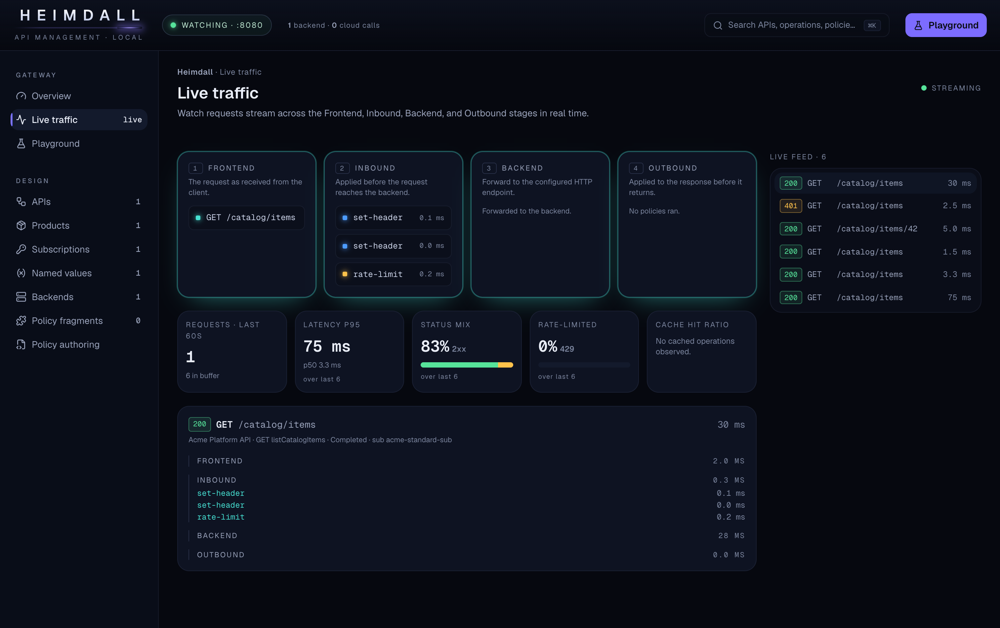

A real policy engine, not a mock
C# @() expressions compiled and cached with Roslyn. ~25 tier-1 policies, <base/> flattening across global → product → API → operation. Same 401/429 shapes as production.
Open source · MIT · .NET 10
A local, offline emulator of the APIM data plane, with a live policy-trace console. Real C# policy expressions, evaluated with Roslyn. Not a mock.
Edit-to-test in under 2 seconds. No Azure account. No cloud calls.

Azure API Management has no official local emulator. Every policy change means a live cloud instance (minutes to provision, on a paid tier), a deploy, and a guess. The self-hosted gateway is not a local option either: it is data-plane only and still needs the cloud instance to run.
Heimdall closes that loop on your machine.
The canvas the console renders: global → product → API → operation, flattened.
The request as received from the client.
Modify the request before it reaches the backend.
Forward to the configured HTTP(s) endpoint.
Modify the response before it returns to the client.
Watch which policies fire, branch decisions, before/after transforms, evaluated @() results, the resolved backend, the final status.
C# @() expressions compiled and cached with Roslyn. ~25 tier-1 policies, <base/> flattening across global → product → API → operation. Same 401/429 shapes as production.
Every request streams across Frontend → Inbound → Backend → Outbound in real time, with per-policy timings, branch decisions, before/after transforms, and a live metrics strip.
Browse APIs, operations, products, subscriptions, named values, and backends, with the flattened effective policy per operation. Secrets masked.
Import a Postman or .http collection, edit method, URL, headers and body, replay through the live gateway, and jump straight to the correlated trace.
Edit policy XML and hot-reload it into the running gateway in memory. No restart, no redeploy.
Raw policy XML + OpenAPI, or an APIOps v6 extractor folder, the same output your APIM CI/CD produces. New formats plug in as adapters.
Unsupported policies fail loudly with a clear error. Never silently skipped.
docker run, point it at your config, open the console.
# Run the gateway against a config directory (policy XML + OpenAPI + config.json) docker run -p 8080:8080 -v "$(pwd)/samples:/config" florinbobis/heimdall --config /config # Send a request through it - policies applied, forwarded to your backend curl -H "Ocp-Apim-Subscription-Key: <key>" http://localhost:8080/catalog/items # Open the console: live trace, config explorer, request playground # http://localhost:8080/_apim/
Or bring up the gateway + a sample backend together with docker compose up.